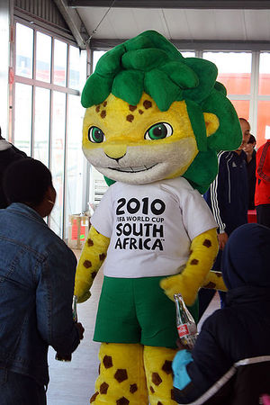
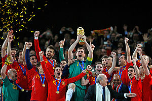
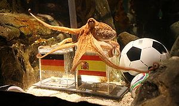

|
Grupo B
Grupo C
Grupo D
Grupo E
Grupo F
Grupo G
Grupo H
El camino ejpañol
 Mascota oficial del Mundial 2010  ¡Por fin campeones del mundo¡  Paul prediciendo la victoria de España Sucia Suiza
España debuta en el mundial ante Suiza, en un partido que acabó con derrota por 1-0. Fue provocada por un sabotaje de Sébastien Buemi y Roger Federer un gol de Fernandes en el minuto 52. Cabe destacar que la selección tuvo muchas ocasiones de gol, pero le faltó puntería y arrancó con mal pie. Eso provocó dudas y críticas a Iker Casillas y su novia, resucitando los viejos fantasmas de que los españoles nunca hacían nada en los mundiales...
Honduras
La selección se veía ante la imperial imperiosa necesidad de vencer, porque de lo contrario prácticamente se iba a la mierda despedía del mundial. Pero los hombres de Vicente del Bosque no fallaron; y aunque costó más de lo previsto, ganaron por 2-0 con dos golazos de David Villa. Tres puntos que calmaban un poquito los ánimos.
Shile
Contra este nadie sabe que paso,el alcohol impide recordar, solo se sabe que David Villa marco desde el medio campo porque el portero se habia asustado porque David Villa le dijo que lo amaba y por eso quedó perturbado. Luego llegó Iniesta e hizo un gol muy gay a Chile. Pero sin embargo, Chile no se rindio e hizo un golazo a los gays españoles, al final se quedaron pasandose el balón en la mitad lo que volvió el partido una mierda, España hizo de el partido el peor aburrimiento. Todos saben que le tenía miedo a Chile y por eso se le insinuo en los camarines hizo cuando quiso atacar.
Octavos de final
En los octavos nos encontramos con la Portugal de Cristiano Ronaldo.Fue una mierda de partidoun partido muy igualado,pero Aspaña se acabó llevando el gato al agua gracias a un gol del puto traidor asturiano David Villa.Ese partido tambien sera recordado por el escupitajo de Cristiano a los zapatos de un camara.Este,puso los zapatos en su cama,reemplazando a su mujer y conservando el ADN de Abdominator 3000
Cuartos de final de la muerte...(casi la cagaste ante Paraguay)
El partido frente a Paraguay mi pirulo fue una sufrida victoria de España.Después de tirar 3646654709985658764646 veces a puerta,a Santo lo atrapo. Luego Villa marcó gol para España
Nazis alemanes
Partido igualado frente al conjunto bávaro (no calla, calla que eso es el Bayern).España tuvo oprtunidades para encarrilar el partido al igual que Alemania con Podolski unas 386 veces.Un corner sacado por Xavi (que sorprendentemente no fue sacado en corto)acabó en la cabeza de Puyol que la introdujo quirurgicamente en la puerta.
NOTA MENTAL: Que vergüenza que nos tenga que salvar un independentista reconocido de la venganza nazi.
El camino nederlandés holandés
Daneses
A estos les ganaron porque el INUTIL de Mtiliga metio en propia
A estos los ganaron por 1-0 porque no tenían ni zorra con ciertas dificultades debido al gran desgaste físico de los nipones. Cabe destacar que tenían varias bajas importantes: Oliver Aton y Benji Price sino Japón habría ganado el mundial, además de Takuma Sato, quien no pudo jugar porque estaba demasiado ocupado compitiendo en las IndyCar Series.
Camerún
¿Como quedaron contra estos? Ah,ganaron. No me extraña que Camerun fichara a Clemente, necesitan consistencia defensiva
Eslovaquia
Ganaron, ¿verdad?
Brasil, el partido de la verdad
Este partido lo ganaron de puta chorra porque Melo y Julio Cesar se fumaron la hierba de Amsterdam y estaban apijotaos
Uruguay
Partido rollo rollo en el que se destaca que Van Bronxpos.... Van brofrkosjityd.... bueno, Gio marcara un chicharrin guapo
Ver también
|
 De: La Frikipedia, la enciclopedia extremadamente seria.
De: La Frikipedia, la enciclopedia extremadamente seria.